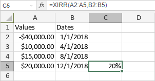

XIRR funkcija
Funkcija XIRR je jedna od finansijskih funkcija. Koristi se za izračunavanje interne stope povraćaja za niz neregularnih novčanih tokova.
Sintaksa
XIRR(values, dates, [guess])
XIRR funkcija ima sledeće argumente:
| Argument | Opis |
|---|---|
| values | Niz koji sadrži seriju uplate i isplate koje se dešavaju neregularno. Najmanje jedna vrednost mora biti negativna, a najmanje jedna pozitivna. |
| dates | Niz koji sadrži datume plaćanja kada se uplate ili isplate vrše. Datumi se unose pomoću DATE funkcije. |
| guess | Procena interne stope povraćaja. Ovo je opcioni argument. Ako se izostavi, funkcija će pretpostaviti da je guess 10%. |
Napomene
Kako primeniti XIRR funkciju.
Primeri
Na slici ispod prikazan je rezultat koji vraća XIRR funkcija.
